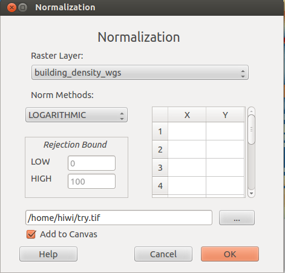
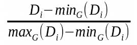
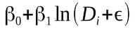
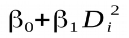
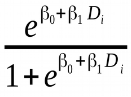
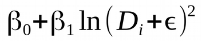

This document gives you a brief introduction of plugin Normalization. Here is the Normalization interface:
Raster Layer combobox provides all the raster layers from QGis layers, from where users can choose anyone need to be normalised.
Raster Layer combobox provides allows users to choose different normalization methods, such as MIN_MAX, LOGARITHMIC, QUADRATIC, INV-LOGIT, LOG-SQUARE, etc.. Here are brief explanations of those methods:
MIN_MAX Method, the fomula is . It implements a simple stretching of the input indicator ́s values. This can be suitable in many cases, but it is prone to be affected by the presence of outliers.All indicator values outside the considered rejection bounds are trimmed to the boundary values, therefore excluding the tails of the distribution which would have dominated the resulting probability
LOGARITHMIC Method, the fomula is .It helps toavoid be biased using MIN_MAX method.
QUADRATIC Method, the fomula is .
INV-LOGIC Method, the fomula is .It refers to a mapping based on a inverse logit functional, with two degree of freedom.β0 Defines the “baseline” probability, when the value of indicator is equal to zero. The coefficient β1 defines the sign of the conditional dependence.
LOG-SQUARE Method, the fomula is .
In all the fomulas above,Di is the particular indicator at the considered location.
For MIN_MAX method,let users input quantiles for calibration. For other methods, when Indicator value pairs are not provided, use them to calculate coefficients Beta0 and Beta1. Defaulted as 0 and 100 (For INV-LOGIT, to avoid infinity problem, defaulted as 1e-5 and 99.99999).
If Indicator value pairs are given, use least square method to get coefficients Beta0 and Beta1. Indicator value pairs are limited to 2~10.
Users choose the image storage path and give the new normalized image a name.
When add to canvas is checked, the mormalized image will be automatically added to QGis layers.
Show users the help document on click.
For more information, please check the SENSUM PROJECT !